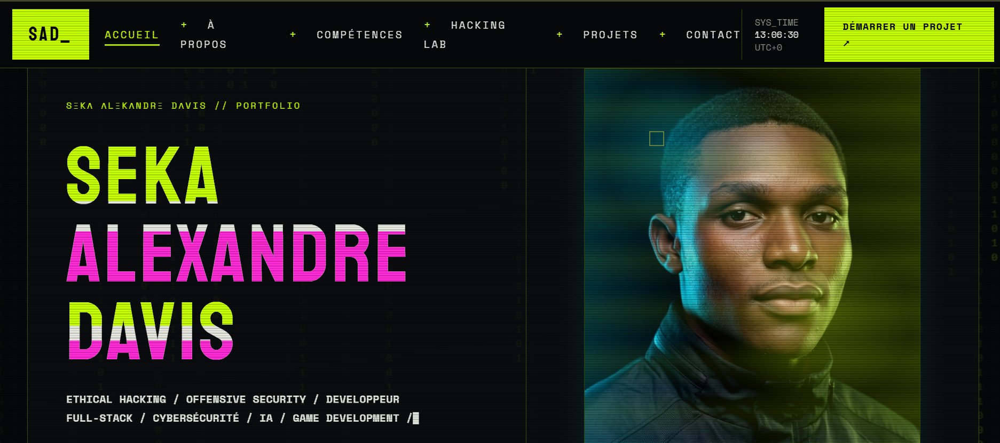

PORTFOLIOPortfolio personnel
Portfolio actuel, conçu comme une vitrine technique personnelle et une démonstration de mon identité visuelle dans le web. Il met en avant mon orientation vers le développement, la cybersécurité et l'IA.
- Interface cyber-brutaliste
- Animations terminales et interactions
- Navigation claire et responsive
Statut : en perpétuelle evolution